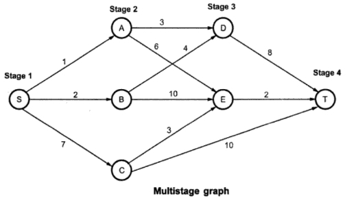

Q.23: Explain multistage graphs. Discuss its applications.
Answer:
Multistage Graph
A multistage graph G = (V, E) which is a directed graph. In this graph all the vertices are partitioned into the k stages where k >=2. In multistage graph problem we have to find the shortest path from source to sink. The cost of each path is calculated by using the weight given along that edge. The cost of a path from source (denoted by S) to sink (denoted by T) is the sum of the costs of edges on the path. In multistage graph problem we have to find the path from S to T. There is set of vertices in each stage. The multistage graph can be solved using forward and backward approach. Let us solve multistage problem for both the approaches with the help of some example.
Consider the graph G as shown in the Fig. There is single vertex in stage 1, then 3 vertices in stage 2, then 2 vertices in stage 3 and only one vertex in stage 4 (this is a target stage).
